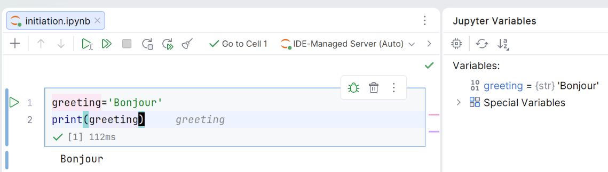

TP1 - Introduction à l’apprentissage automatique (machine learning)
1 Initiation à Jupyter dans PyCharm
Un notebook Jupyter est un document interactif qui combine code, texte et résultats dans le navigateur. On écrit du code par petits blocs, on l’exécute, et le résultat s’affiche juste en dessous.
Bien qu’il soit possible d’utiliser un navigateur pour travailler avec Jupyter, nous utiliserons PyCharm car il offre des fonctionnalités plus avancées :
- souligne les erreurs potentielles en rouge
- autocomplétion du code avec ctrl-space
- navigation avec ctrl-click
- documentation avec ctrl-Q
- inspection des variables
1.0.1 Créer un notebook
- Lancez PyCharm
- Créer un nouveau projet Python.
- Location : choisissez un répertoire, en nommant le projet
tp0_jupyter - Interpreter type: venv
- Location : choisissez un répertoire, en nommant le projet
- File -> New File or Directory -> Jupyter Notebook. Nommez le “initiation”
1.0.2 Ajouter du code
- La première cellule est de type code. Collez le code suivant et cliquez sur le bouton vert à gauche :
greeting='Bonjour'
print(greeting)Le résultat s’affiche sous la cellule, et la fenêtre “jupyter variables” affiche le contenu de greeting.

Le point fort de Jupyter : les variables restent en mémoire d’une cellule à l’autre, dans l’ordre où vous les exécutez. Une valeur calculée dans une cellule est réutilisable dans les suivantes.
- Ajoutez une nouvelle cellule (bouton +), et collez le code qui suit. Ensuite, exécutez le avec ctrl-enter
greeting += ' depuis Jupyter'
print(greeting)Une cellule utilise les variables déjà exécutées, pas leur position dans le notebook. Si vous obtenez une erreur NameError, vérifiez que vous avez bien exécuté les cellules dans le bon ordre, ou redémarrez le kernel.
On peut exécuter une cellule plusieurs fois, mais attention ! Si votre cellule modifie des variables, l’exécuter plusieurs fois peut créer des problèmes.
1.0.3 Installer une bibliothèque
Nous aurons besoin de matplotlib pour tracer des graphiques. Pour l’installer :
- Créez un nouveau fichier
requirements.txt - Collez ce contenu dans le fichier :
matplotlib==0.4.3- Cliquez sur le bouton en haut à gauche de l’éditeur “pip update from requirements.txt”
1.0.4 Créer un graphique
Créez une nouvelle cellule pour tracer un graphique :
import matplotlib.pyplot as plt
x = [1, 2, 3, 4, 5]
y = [2, 4, 6, 8, 10]
plt.plot(x, y, marker="o")
plt.title("Mon premier graphique")
plt.show()Après exécution, le graphique s’affiche sous la cellule.
1.0.5 Ajouter du texte
Créez une cellule, puis changez son type de code à markdown. Collez le contenu suivant :
# Mon analyse
Ceci est une **cellule Markdown** pour expliquer mon travail.
## Objectifs
- Apprendre Jupyter
- Créer des graphiquesAprès exécution, jupyter affiche le contenu formatté.
1.0.6 Comprendre le kernel
Le kernel est le processus qui exécute votre code Python en arrière-plan. Quand une cellule reste bloquée sur [*] ou que l’interface ne répond plus, le kernel est occupé ou planté. Le menu en haut permet de le reprendre en main :
- Interrupt : arrêter l’exécution en cours.
- Restart : redémarrer le kernel (les variables sont perdues).
- Restart Kernel & Run All : redémarrage complet et exécute toutes les cellules une par une. A utiliser pour vérifier que votre notebook s’exécute sans erreurs.
- Clear output: efface les sorties, utile si on veut committer le notebook sans les résultats.
En cas de doute après beaucoup de modifications, redémarrez le kernel et réexécutez les cellules dans l’ordre pour repartir sur une base saine.
1.0.7 À retenir
- Un notebook est une suite de cellules de code et de texte, exécutées une par une.
- Les variables persistent entre cellules selon l’ordre d’exécution. En cas d’erreur, redémarrez le kernel.
- Le fichier
.ipynbstocke code, texte et résultats au format JSON, portable.
2 TP régression linéaire
- Cliquez sur le lien GitHub classroom pour créer votre repository GitHub
- Lancez PyCharm
- File -> Project from version control…
- Collez l’URL de votre repository GitHub et choisissez un répertoire de destination.
- Ouvrez le fichier
tp1a_linear_regression.ipynb - Exécutez les cellules une par une, en complétant le code qui suit les
# TODO ...
3 TP descente de gradient
- Dans le projet tp1_ml, ouvrez le notebook
tp1b_gradient_descent.ipynb - Suivez les instructions